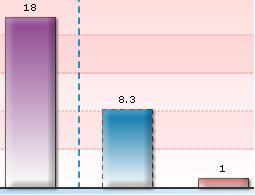

|
| |
| If you need to create bevel effects for any of chart objects,
you'll need to use the Bevel Style Type
with the following list of properties: |
Properties |
Description |
Angle |
The
angle of the bevel. Valid values are from 0 to 360 degrees. The
default value is 45 |
Distance |
The
offset distance of the bevel. Valid values are in pixels (floating
point). The default value is 4. |
shadowColor |
The
shadow color of the bevel. Valid values are in hexadecimal format
RRGGBB (without #). The default value is 000000 |
shadowAlpha |
The
alpha transparency value of the shadow color. This value is specified
as a normalized value from 0 to 100. For example, 25 set a transparency
value of 25%. The default value is 50. |
highlightColor |
The
highlight color of the bevel. Valid values are in hexadecimal format
RRGGBB (without #). The default value is FFFFFF |
highlightAlpha |
The
alpha transparency value of the highlight color. The value is specified
as a normalized value from 0 to 100. For example, 25 sets a transparency
value of 25%. The default value is 50. |
blurX |
The
amount of horizontal blur in pixels. Valid values are from 0 to
255 (floating point). The default value is 4. Values that are a
power of 2 (such as 2, 4, 8, 16, and 32) are optimized to render
more quickly than other values |
blurY |
The
amount of vertical blur in pixels. Valid values are from 0 to 255
(floating point). The default value is 4. Values that are a power
of 2 (such as 2, 4, 8, 16, and 32) are optimized to render more
quickly than other values |
Strength |
The
strength of the imprint or spread. Valid values are from 0 to 255.
The larger the value, the more color is imprinted and the stronger
the contrast between the bevel and the background. The default value
is 1 |
Quality |
The
number of times to apply the filter. The default value is 1, which
is equivalent to low quality. A value of 2 is medium quality, and
a value of 3 is high quality. Filters with lower values are rendered
more quickly |
|
| |
To set the bevel for any object of the chart, you
just need to define a Bevel Style Type
and apply it as under:
|
<style name='MyFirstBevel'
type='Bevel' />
…
<apply toObject='DataPlot' styles='MyFirstBevel' /> |
| |
It will give you the following effect: |
|
| |
| Setting angle and distance |
You can set the bevel angle and distance as under:
<style name='MyFirstBevel' type='Bevel' distance='7'
angle='200'/> |
|
Property |
Format |
Example |
Distance
|
distance='value
(in pixels)' |
distance='7'
|
Angle |
angle='value
(between 0 to 360)' |
angle='200' |
|
| |
And it looks like this now: |
|
| |
| Setting shadow colors |
To change shadow color and alpha, you can use the following
parameters:
<style name='MyFirstBevel' type='Bevel' shadowColor='000000'
shadowAlpha='80' distance='5' angle='45'/> |
|
Property |
Format |
Example |
shadowColor
|
shadowColor='Hex
Value (without #)' |
shadowColor='000000'
|
shadowAlpha |
shadowAlpha='value
(between 0 to 100)' |
shadowAlpha='80' |
|
| |
It will change the shadow color as under: |
|
| |
| Controlling blur amount |
You can also change the blur amount to get a smoother
bevel. |
| <style name='MyFirstBevel' type='Bevel'
blurX='12' blurY='12'/> |
|
Property |
Format |
Example |
blurX
|
blurX='value'
|
blurX='12'
|
Blurry |
blurY='value' |
blurY='12' |
|
| |
The above gives the following output: |
|
 |
Original with default
blur |
With both blurX and
blurY set as 12 |
|
| |
| Increasing bevel strength |
To increase bevel strength, use the strength attribute
as under:
<style name='MyFirstBevel' type='Bevel' strength='3'/> |
|
Property |
Format |
Example |
Strength |
strength='value' |
strength='3' |
|
| |
|
You can play with a plethora of aforementioned properties
and style type to get the look you want. |